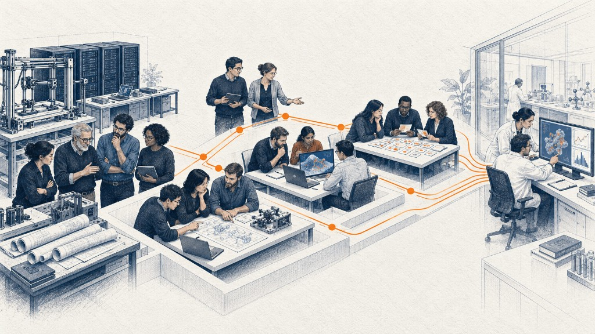

Growth starts with useful adoption.
Expanding an enterprise platform at Box, exceeding quota at Braintrust and ADP, and leading a new GTM motion at G2i.
100 seats became 3,000.
At Box, I won an initial deployment, then spent roughly a year helping the customer build a case for a much broader platform.
Carried a $1 million annual sales quota. Met prorated quota in year one and full-year quota in year two.
Own the number.
Individual attainment and company growth measure different things. Each is part of my record.
Presence was the top of the funnel.
At G2i, events and relationships helped us reach frontier-lab teams and build a new pipeline.
The presence engine
Conferences, dinners, and a creator channel feed a large 59 percent figure: share of leads in one quarter, 1,075 leads.
proof it workedQ2 2026: 1,075 leads, 59% of the quarter, led by AI Engineer World's Fair.
The human-data layer.
The company already owned the hard assets and an expert network of engineering. The gap was organizing cohorts into what the labs wanted.

Operating discipline that didn't exist before.
The staffing business ran on instinct and spreadsheets. It left running on a system.
From inside the org
One thing that really stands out about Patrick is how much he embraces AI and agentic workflows. He's one of the best people I know at using AI to get work done more effectively. He constantly shares what he learns, and because of him, so many people on the GTM team started using AI in their day-to-day work.
I had the pleasure of learning from Patrick about agentic workflows, AI agents, and the broader systems that enable teams to operate more effectively. His democratic leadership style stood out most. He trusted his teams to execute, empowered them with the right guidance, and avoided unnecessary micromanagement.